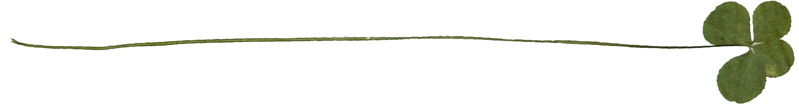

Down on your luck, bored, or need a hobby you can introduce yourself with for those start-of-semester icebreakers? Allow me to introduce you to the art of finding four leaf clovers!
I started clover hunting on a whim as I was graduating high school, simply trying to find a way to enjoy the spring weather.
3 years, 3 summers, and hundreds of four/five/six leaf clovers later, I'm spilling my secrets of the trade... So, it's your chance to take a shot at this super lucky pastime!


[1]
What is a Clover?
Before you go clover hunting, you gotta know what you're looking for! Below are three common clover species that produce 4 leaf clovers.
White Clover
Trifulium repens
Medium to large clovers, serraded leaflets, and light pink flowers that get white over time. They look similar to Red Clovers, but Alsike clovers lack the distinct "V" pattern on its leaflets that Red Clovers have, usually just appearing plain green.
Red Clover
Trifulium pratense
Medium to large clovers, serraded leaflets, and light pink flowers that get white over time. They look similar to Red Clovers, but Alsike clovers lack the distinct "V" pattern on its leaflets that Red Clovers have, usually just appearing plain green.

{kind=link}
{kind=link}
{kind=link}
{kind=link}
{kind=link}
Alsike Clover
Trifulium hybridum
Medium to large clovers, serraded leaflets, and light pink flowers that get white over time. They look similar to Red Clovers, but Alsike clovers lack the distinct "V" pattern on its leaflets that Red Clovers have, usually just appearing plain green.
{kind=link}
- Clover Lookalikes -
{kind=link}
Wood Sorrels
Oxalis
Common plants with five-petaled flowers and deeply notched, heart-shaped leaves. New clover hunters mistake these for clover plants due to their notched leaflets, but they are not clovers! Unlike wood sorrels, clover plants have "spiky" flowers, and have much smaller notches on their leaves (usually none at all).
{kind=link}
Bird's Foot Trefoil
Lotus corniculatus
A relative of the clovers, adorned with their distinct puffy yellow flowers. Their leaves of three may look similar, but beware! They also have two leaves that jut out from a lower part of their stem.

Fourleaf Pink-Sorrel
Oxalis tetraphylla
Also known as Iron Cross Oxalis, they are often sold (and mistaken) as four leaf clovers, but note that they're imposters! Fourleaf pink-sorrels are a species of wood sorrel found in Mexico, notably always having 4 leaves and a dark patch in the middle of their leaflets.
{kind=link}
Water Clovers
Marsilea
Four-leafed aquatic plants found in ponds, swamps, and marshes, growing both in and nearby water. Despite their name and clover-like appearance, water clovers are ferns, not clovers!
[2]
What should I bring?
Clover hunting is partly a game of chance. You don't always know when or where you'll get a lucky find, so you better be prepared for when you do!
- If you plan on taking your clovers back with you, this is essential! Applying pressure by holding them in your hand will result in the clovers shriveling up in minutes.
- Once you pick a clover, gently place them in and avoid touching it until you get back.
- I like using empty spice jars for this. Portable, resusable, and very cute! They do the job great!
Small Container
- Clovers grow amongst a wide ranger of other plants, and also attract a variety of critters, especially insects!
- Plant seeds or an opportunistic bug might decide to hitch a ride on your leg.
- Keeping anything below your knee fully covered will ensure your skin is protected from pricks and crawlies, especially when walkting through tall grass or larger clover patches.
Long Pants/Socks
- You wouldn't barge into an unpaved, dirt-ridden nature trail wearing your brand-new-200-dollar J's, so don't wear it while clover hunting either!
- Shoes have a chance of becoming muddled, especially if you're barging into tall grass, or are clove hunting after heavy rain.
Old Sneakers
[3]
What should I be looking for?
Now that you're armed with knowledge, it's time to train your eye!